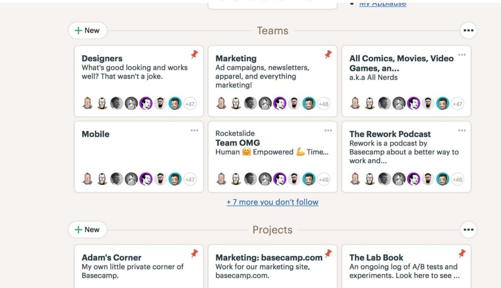

เนื่องจากได้เฝ้ามองการพัฒนาแอ็ปบางตัวมาระยะหนึ่ง (ตัวแรกก็น่าจะตั้งแต่ปี 2555 กับอีกระบบที่กำลังพัฒนากันอยู่เป็นปีแล้วยังไม่เห็นรูปร่าง) เท่าที่มีโอกาสได้ร่วมฟังทางฝั่งผู้พัฒนาแอ็ปมีแต่คนพูดถึงการออกแบบตาม “ความต้องการ” (ซึ่งในที่นี่คือ TOR) ถึงแม้จะมีการเก็บ Requirement แต่ดูจากคำถามแล้ว มั่นใจว่าคนถามก็ไม่เข้าใจกระบวนการทำงาน ถ้าเริ่มต้นยังไม่รู้ว่าจะใช้งานอะไรแบบไหน ก็ไม่แปลกใจที่ UX จะออกมาแย่ หรือ ไม่คำนึงถึง Usability Design (การออกแบบให้ใช้ทำงานสะดวก)
UI = User Interface ตรงนี้มีคนแปลว่า “ส่วนติดต่อผู้ใช้” บ้างก็แปลว่า “หน้าจอผู้ใช้” คือสิ่งที่ผู้ใช้งานมองเห็นผ่านอุปกรณ์ทำงาน
UX = User eXperience ส่วนนี้คือประสบการณ์ของผู้ใช้งาน คือเรื่องความสะดวก ตอบสนองการใช้งาน ยาก — ง่าย
ในฐานะที่ออกแบบแอ็ปไม่เป็น (เอาจริงก็ทำอะไรไม่เป็นสักอย่าง) แถมยังโง่เรื่องเทคโนโลยีก็เลยเข้าใจเรื่อง UX ว่ามันสำคัญมากในแบบที่ ใครมองข้าม UX สนใจแต่ TOR นี่คือคนใจทมิฬหินชาติอุบาทว์มาก สมควรตกนรกหมกไหม้บรรลัยกัลป์เสียเถิด
UX เป็นหัวใจของการออกแบบทุกประเภท คุณเป็นสถาปนิกออกแบบบ้าน คุณก็คงอยากลูกค้าที่อยู่ในบ้านรู้สึกสะดวกสบายเหมือนอยู่บ้านตัวเอง ไม่ใช่อาศัยคนอื่นอยู่ แบบนี้เลย หัวใจของการออกแบบ
นอกเรื่องนิด มีซีรีย์ญี่ปุ่นเรื่อง ATELIER เป็นเรื่องเด็กสาวจบใหม่ไปเริ่มทำงานในร้านออกแบบชุดชั้นในประเภท made to order เรื่องนี้แนะนำให้คนที่สนใจเรื่องปรัชญาการออกแบบ UI/UX ได้ลองดู
คือจะเริ่มต้นอะไร ต้องนึกถึงการออกแบบ หรือเรียกเก๋ ๆ ว่าดีไซน์ ถึงเรามั่นใจว่าออกแบบชั้นในลวดลายสวย ใช้วัสดุดี (UI -) แต่สิ่งแรกที่ควรคิดคือความพึงพอใจของลูกค้า (UX)!! นี่คือปรัชญาการออกแบบของทุกสรรพสิ่งในโลก
ไม่ทราบว่าท่านผู้อ่านเคยใช้บริการ BaseCamp หรือไม่ ตัวนี้เป็นซอฟต์แวร์ด้านบริหารโครงการกับสื่อสารระหว่างสมาชิกทีม การออกแบบหน้าตา (UI) เรียบง่ายมาก แต่ใช้งาน (UX) ดีมาก คนใช้งานง่าย สะดวก ทำความเข้าใจกระบวนการทำงานได้ในไม่กี่นาที
คำว่าเรียบง่ายไม่ได้แปลว่าไม่สวย แต่เข้าใจว่าคนออกแบบน่าจะคำนึงถึง UX ก่อน แล้วค่อยออกแบบ UI ตาม และคงไม่เน้น UI เท่าไหร่ เพราะจุดมุ่งหมายของ basecamp อยู่ที่การใช้งานอยู่แล้ว และมีสิ่งที่ BaseCamp คิดเกี่ยวกับ UX เช่น การทำงานที่เป็นกระบวนการ 1–2–3–4–5–6–7 มันไม่จริงหรอก และก็ไม่ผิดที่จะเขียนกระบวนการ 1–2–3–4–5–6–7 เวลาคุณเขียนโปรเจ็กต์ก็ต้องเขียนขั้นตอนกระบวนการอยู่แล้ว (เช่น 1 เตรียมข้อมูล 2 ลงข้อมูลในแผนที่ ไปจน 7 การทำร่างบัญชี มีแกรนต์ชาร์ตระบุช่วงเวลาสวยงาม รายงานผลตรงเป๊ะ) แต่ในการทำงานจริงมีอะไรเกิดขึ้นจะทำให้กระบวนการนั้นสะดุด เช่นขั้นตอน 1–2 ยังไม่เสร็จ แต่ต้องทำขั้นตอน 3 ก่อน แล้วย้อนกลับไปทำ ขั้นตอน 2 หรือทำควบคู่กันไป
ตรงนี้คือหัวใจของการออกแบบ UX ต้องเรียนรู้ผู้ใช้งานแล้วนำมาพัฒนาแอ็ป ซึ่ง BaseCamp ทำได้ดีมาก
UX มันไม่ใช่เรื่องของสิ่งที่เห็นในหน้าจอคอมพิวเตอร์ หรือในไอแพด หรืออุปกรณ์สมาร์ตโฟนต่าง ๆ มันคือการสร้างปฏิสัมพันธ์กับผู้ใช้งาน ซึ่งเป็นหัวใจสำคัญของการทำงาน นั่นคือการสื่อสารที่ดี ไม่ว่าจะเป็นสินค้า หรือบริการที่ลูกค้าจะต้องใช้งานหรือใช้บริการ
การออกแบบตาม TOR เป็นแค่ทำแอ็ปเพื่อให้ใช้งานได้ (Usability) เท่านั้นเป็นสิ่งไร้ความสร้างสรรค์ที่นักออกแบบที่มีความภาคภูมิใจในอาชีพของตนเองพึงละอาย การใช้ตัวชี้วัดเป็นสิ่งที่จับต้องได้ เช่น จำนวนของอะไรสักอย่าง สมมติ จำนวนกระดาษกี่แผ่น หรือ จำนวนการเข้าชมเว็บมันคือสิ่งที่เล็กน้อยจนแทบไม่มีสาระสำคัญ
ทำไมถึงหลงลืมเรื่อง การใช้ทรัพยากรที่เหมาะสม (Resource) ความสามารถในการเรียนรู้ (Learnability) การตอบสนองด้านอารมณ์และพฤติกรรมต่อสินค้าและบริการ (Emotional and Behavioral Response)
ออกแบบเว็บไซต์หรือแอ็ปที่เกี่ยวกับแผนที่การเดินทาง คุณใส่ข้อมูลประดามีในมือในเว็บ ออกแบบสวยงาม แต่พอผู้ใช้งานอยากจะปักหมุดลงแผนที่เพื่อกำหนด POI แต่กว่าจะกดปักหมุดต้องใส่ข้อมูลห่าเหวอะไร คลิกแล้วคลิกอีก ขยับไปแค่ 50 เมตรก็ต้องเริ่มขั้นตอนใหม่ แบบนี้บ้าหรือเปล่า? จะสั่งค้นหาถนน ดันได้แต่พิกัด X,Y แล้วจะบอกแท็กซี่อย่างไร ไปละติจูดนี้ ลองติจูดนี้ เอาแบบนี้เหรอ?
บางทีเจอแบบนี้ก็นึกว่าคนออกแบบมันหลุดมาจากโลกไหนวะ?
Tag : UI UX UX/UI Design